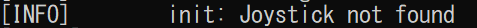

トップ
リンク集
操作方法
ゲームパッドのボタンは設定画面で変更可能。
| 動作 | キー | ゲームパッド（デフォルト、機種差あり） |
|---|---|---|
| メニュー操作/移動 | 矢印キー | 左ジョイコン |
| 決定/アイテム使用 | Space | A |
| ジャンプ | 上矢印キー | X |
| 仕掛けを使用 | エンターキー | Y |
| 戻る | Escape | B |
| 終了/一時停止 | Escape | Start |
| デバッグ情報を表示 | F3 | 無し |
| 現在のシーンを再ロード | F4 | 無し |
| ウィンドウモード切り替え | F11/Shift+F11 | 無し |
| 強制終了 | Alt + F4 | 無し |
ゲームパッドの使い方
起動時に最初に検知されたゲームパッドしか使えないので起動前に繋いでおかないといけない。
もし検知できなかったときはGame_Console.exeを開くと下のメッセージが出るはず。
ゲームを起動できないときの対処法
「○○.dllが見つからない」
ゲームの必要なファイルが一緒にダウンロードできていないので、ゲームのフォルダごとダウンロードしなおすと直る。
「Windows によって PC が保護されました」
初めてゲームを起動しようとすると「Windows によって PC が保護されました」といった警告が高確率で出る。この場合は「詳細情報」→「実行」を押すと起動できる。二度目以降は警告は出ないはず。
「Error Message」
ゲームを起動すると「Error Message」などと書かれた警告が出ることがある。ほとんどの場合、ゲームの必要なファイルが一緒にダウンロードできていない時に出るので、ゲームのフォルダごとダウンロードしなおすと直る。